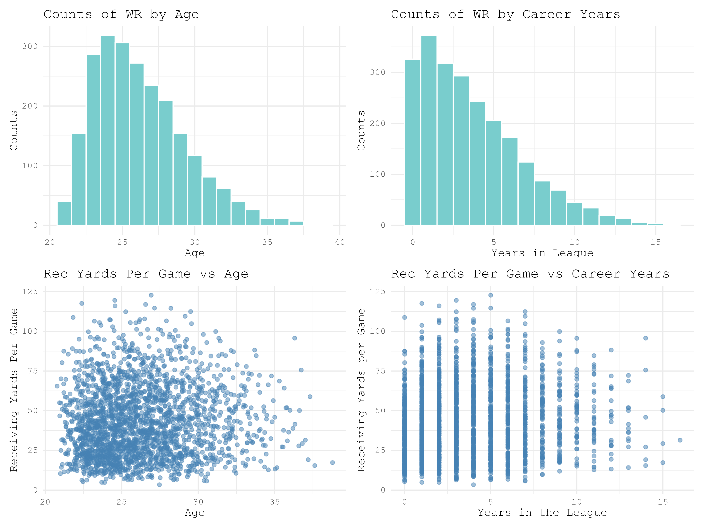

Introduction
This is essentially a small statistical report on when an NFL wide receiver is most likely
playing at an elite level. For the sake of simplicity "elite" will be defined as having either 1000 yards OR 100 catches in a single season.
It's extremely rare that a player only have one of the two, but a minimum of one is all that's necessary for this.
Below are some basic stats about wide receivers from the last 20 years (2006-2026). We're examining how many WRs are in each age group (for each season) as well as their career years played (as of a given season). These age metrics are then compared to receiving yards per game -- the primary measure of a receiver's ability.
Below are some basic stats about wide receivers from the last 20 years (2006-2026). We're examining how many WRs are in each age group (for each season) as well as their career years played (as of a given season). These age metrics are then compared to receiving yards per game -- the primary measure of a receiver's ability.

Looking at these charts without digging further into the numbers, receivers tend to be in their mid-20s and don't last much longer than 5 years in the NFL. There also doesn't look to be a strong correlation between either age metric and receiving yards per game. These plots were just made to get a really quick look at the population we're working with. What we actually want to know are two things: (1) Is there a correlation between age/career years and IF a receiver has an elite (as we defined earlier) season? (2) Given a player's age and draft position, what is the probability of them having an elite season? Both of these are examined in much more detail on their respective pages.
Results Summary
Career years and draft position do have sginificant correlation with chances of having an elite WR seaon. Generally, elite WRs have about 1 more year in the league that non-elite, and are mostly drafted in the first 3 rounds of the draft. Probability of a WR having an elite seasons falls sharply for WRs drafted after the second round.
For the sake of making this site I haven't gone too far into the statistical significance/calculations/biases underlying these results, but there is actually a lot going on here and can lead to more downstream analyses both for fine-tuning and using other variables for determining probabilities of a wide receiver having an elite season.
For the sake of making this site I haven't gone too far into the statistical significance/calculations/biases underlying these results, but there is actually a lot going on here and can lead to more downstream analyses both for fine-tuning and using other variables for determining probabilities of a wide receiver having an elite season.